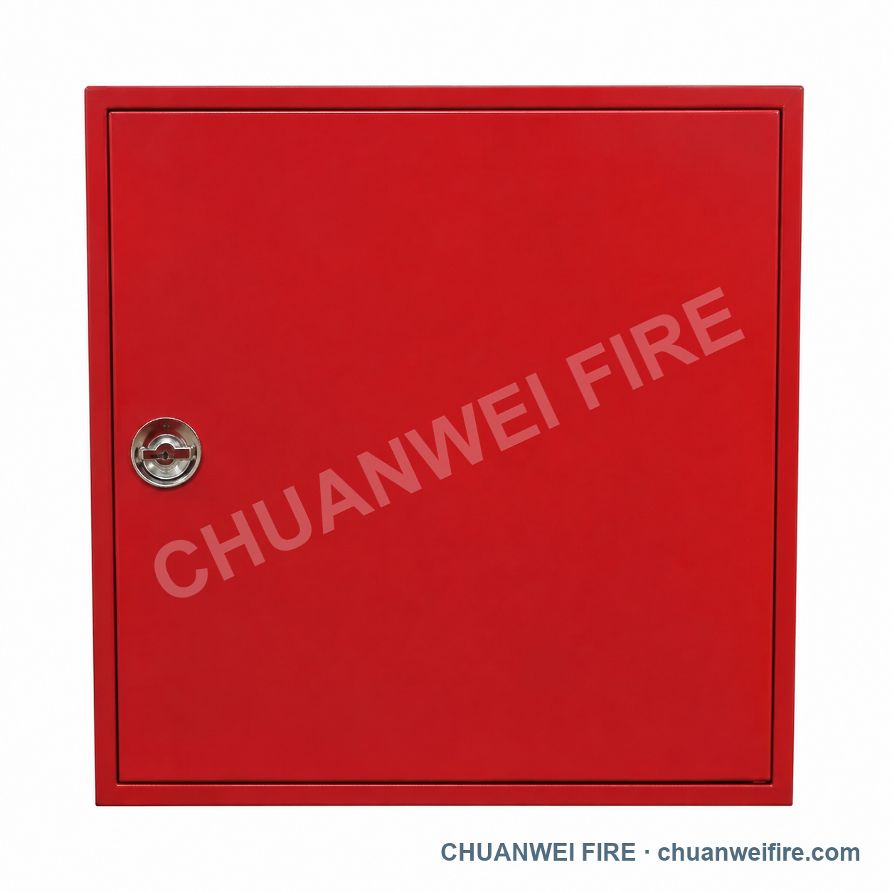

التشغيل
تدعم عمليات CNC والورشة إنتاج المكونات ومراجعة التكوين.
مصنّع · مكونات أنظمة مياه مكافحة الحريق
رشاشات الحريق وصمامات الإنذار والتحكم وبكرات الخراطيم والخراطيم والفوهات والوصلات ومكونات أنظمة صنابير الحريق للتجار والموزعين وعملاء العلامة الخاصة.
التشغيل والإنتاجعن جهة التصنيع
نعمل من نانآن، تشيوانتشو، فوجيان في الصين، ونصنّع ونورّد منتجات ومكونات أنظمة مياه مكافحة الحريق. ندعم مراجعة التكوين والعلامات والتعبئة لعملاء التجارة والعلامة الخاصة.
تُراجع متطلبات اللولب أو الفلنجة أو الطرف المحزّز الدولية وفق رسم المشتري أو عينته أو جدوله الفني قبل التأكيد، ولا تُعرض قدرة التشغيل وحدها كإثبات امتثال لمعيار خارجي محدد.
نطاق المنتجات
نستخدم الأسماء الدولية أولاً، مع الاحتفاظ بأكواد المصنع المرجعية لتنسيق عرض السعر والإنتاج.

رشاشات قياسية وسريعة الاستجابة ومخفية وجافة، إضافة إلى فئات الرشاشات والفوهات المفتوحة للأغراض الخاصة.
عرض الفئة ←
مجموعات صمامات الإنذار الرطب والغمر والإجراء المسبق والأنابيب الجافة لأنظمة مياه مكافحة الحريق.
عرض الفئة ←
فئات صمامات الفراشة اليدوية والمراقبة بتوصيلات محززة أو رقاقة.
عرض الفئة ←
فئات صمامات البوابة المراقبة وذات الساق غير الصاعد وOS&Y لشبكات مياه مكافحة الحريق.
عرض الفئة ←
فئات بكرات خراطيم مثبتة على الحائط بتكوينات تدفق مباشر ونفاث/رذاذ وخدمة شاقة.
عرض الفئة ←
فوهات خراطيم الحريق والوصلات والمهايئات والمكونات المرتبطة بها متاحة لطلب عروض أسعار منفصلة.
عرض الفئة ←
محابس مخارج مياه الحريق الداخلية بتكوينات قياسية ومائلة ومزدوجة المخرج ومنظمة للضغط.
عرض الفئة ←
تكوينات صنابير حريق فوق سطح الأرض مرتبة حسب نمط السوق المستهدف.
عرض الفئة ←
مجموعات إدخال مياه خدمة الإطفاء مرتبة حسب طريقة التركيب والتوصيل من جهة النظام.
عرض الفئة ←
خزائن معدات مكافحة الحريق بأبواب مصمتة أو مزودة بنوافذ، مع أبعاد قياسية مختارة وتصنيع حسب متطلبات الطلب.
عرض الفئة ←نظرة على التصنيع
توضح الصور بيئة التصنيع ومعالجة المنتجات وتجهيز الطلبات، وتبقى المطابقة الفنية مرتبطة بالموديل والوثائق المؤكدة.


OEM / ODM
يمكننا مراجعة وسم المنتج ولوحة البيانات وتصميم العبوة والتشطيبات المختارة وتركيبات المكونات. تُؤكد متطلبات اللولب والفلنجة والمجرى من الرسم أو العينة أو الجدول الفني.


تعرض صور التعبئة أشكالاً محتملة فقط، وتُؤكد التعبئة النهائية حسب المنتج والطلب ومتطلبات النقل.
أنظمة إدارة موثقة
هذه شهادات أنظمة إدارة وليست اعتمادات منتجات UL أو FM أو CE. تُؤكد تقارير المنتجات المحلية ونطاق تطبيق الشهادة بشكل منفصل.
نظام إدارة الجودة. انقر لعرض الشهادة المقدمة.
نظام الإدارة البيئية. انقر لعرض الشهادة المقدمة.
نظام إدارة الصحة والسلامة المهنية. انقر لعرض الشهادة المقدمة.
استفسار فني وتجاري
لإجراء مراجعة مفيدة، أرسل فئة المنتج والكمية والوجهة والتوصيل أو الرسم المطلوب ومتطلبات التعبئة وأي متطلبات اعتماد.